EqASM
흩어진 수식 조각들을 LaTeX로 조립하기
시험지를 문항 데이터로 변환할 때 가장 까다로운 대상은 수식입니다. 지문과 발문은 글자를 그대로 옮기면 되지만, 수식은 부호 하나만 뒤집혀도 다른 문제가 됩니다. 수학 문항만의 문제도 아닙니다. 화학의 반응식과 이온 표기, 물리학의 단위와 지수처럼, 수능 시험지에서 수식은 과목을 가리지 않고 등장합니다.
최근에는 이미지 속 수식을 LaTeX로 변환하는 작업을 GPT 등 LLM에 맡기는 경우가 많습니다. 하지만 실제 측정 결과 LLM을 이용한 OCR 기반의 수식 인식은 항상 정확하지는 않았습니다. 이 글에서는 이러한 문제 상황을 분석하고, 이를 해결하고자 강남대성수능연구소에서 자체 개발한 ML 모델인 EqASM을 소개합니다.
1. GPT는 수식을 정확하게 읽지 못한다
최신 평가원 기출에서 수식 밀도가 높은 수학 5문항(2026 6월 모의평가 15·20번, 2025 수능 미적분 28·30번, 2025 9월 모의평가 미적분 24번)과 화학Ⅰ 5문항(2026 6월 모의평가 9·11·13·19·20번)을 골라, 문항 단위로 잘라낸 동일한 이미지를 OpenAI의 최신 모델 GPT-5.6 두 등급(Sol·Luna)에 문항당 10회씩, 모델당 100회 옮겨 적게 했습니다. 채점은 원본 수식과의 기계 대조로 하되, 불일치로 걸린 출력은 전부 눈으로 재확인해서 \frac{1}{2}과 1/2 같은 단순 표기 차이는 정답으로 인정했습니다.
| 모델 | 수학 (50회) | 화학 (50회) | 전체 정확도 | 10회 일관성 | 비용 (100회) | 평균 응답 |
|---|---|---|---|---|---|---|
| GPT-5.6 Sol (최고 성능) | 43/50 | 49/50 | 92% | 91% | $1.96 | 14.2초 |
| GPT-5.6 Luna (경량) | 44/50 | 23/50 | 67% | 76% | $0.52 | 5.1초 |
최고 성능 모델이 100회 중 8회를 틀렸고, 경량 모델은 3회 중 1회꼴로 틀렸습니다. 특히 표기가 밀집된 화학에서 경량 모델의 정확도는 절반 아래(23/50)로 떨어집니다. 일관성 수치는 같은 이미지를 열 번 넣었을 때 같은 결과가 나온 비율입니다 — 10회 중 2~3회는 이전 실행과 다른 결과가 나온다는 뜻이기도 합니다. 아래는 실제로 틀린 대표 사례 네 건입니다. 왼쪽 문항 이미지에 붉게 표시한 수식이 문제가 된 대목입니다.
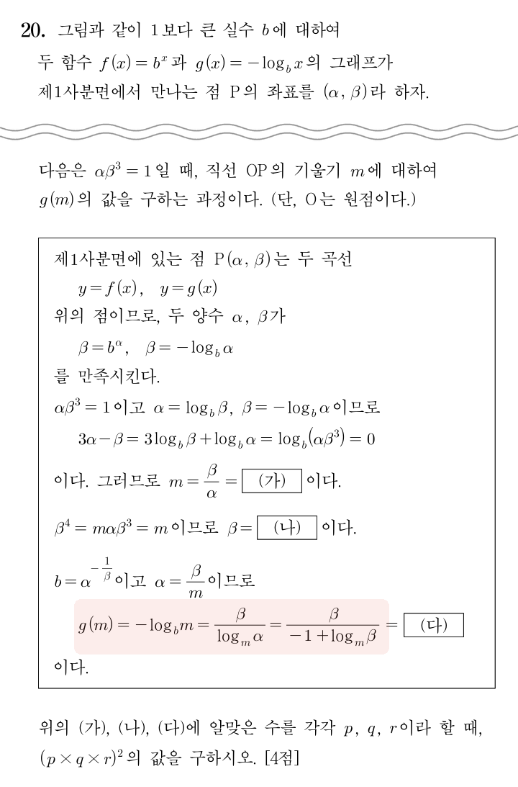
최고 성능 모델도 절반의 확률로 분모의 $-1$을 $+1$로 바꿉니다. 문법적으로 완결된 출력이라 원본 없이는 가려내기 어렵습니다.
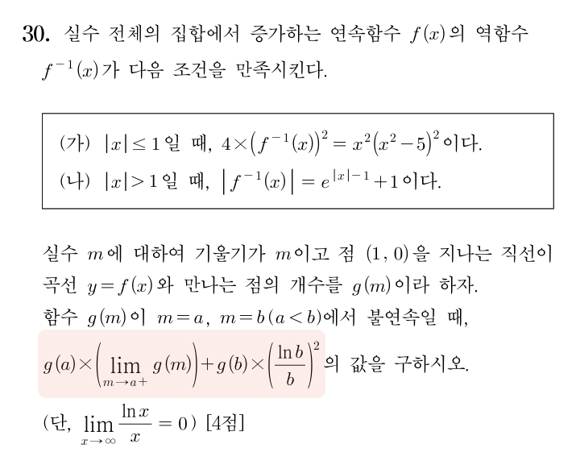
우극한 $m\to a+$의 방향이 사라져 양쪽 극한이 되거나, 좌극한으로 반전됩니다. 불연속점에서의 극한이므로 문제의 답 자체가 달라집니다.
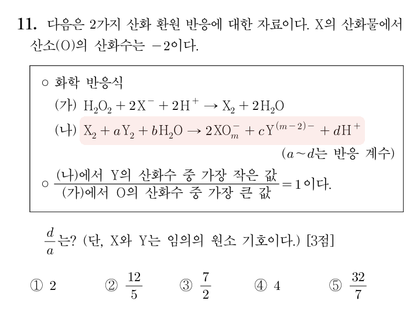
이웃한 $\mathrm{Y}^{(m-2)-}$의 전하 표기가 옮겨 붙어 존재하지 않는 이온이 되거나, 전하 표기 전체가 사라집니다.
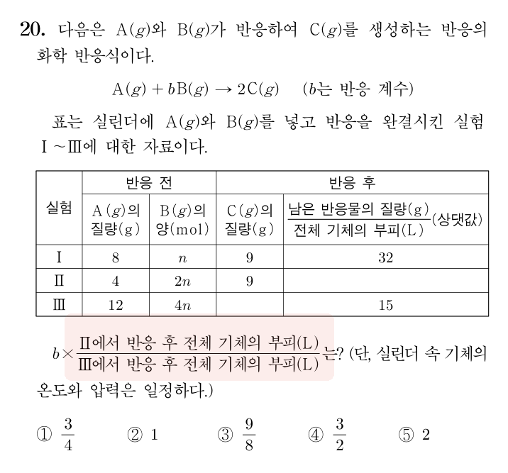
분자와 분모의 실험 번호가 서로 뒤바뀝니다. 문항에 없는 Ⅰ이 등장하거나 분자·분모가 같아지기도 합니다. 값이 역수가 되는 오류입니다.
200회에서 관찰된 오류를 정리하면 세 갈래입니다.
| 유형 | 무엇이 일어나는가 | 실측 사례 |
|---|---|---|
| 오독 | 부호·첨자·구조가 다른 의미로 바뀜 | 분모의 $-1$이 $+1$로, 우극한이 좌극한으로, 분수의 분자·분모 반전, 이웃 항의 전하 표기가 옮겨 붙음 |
| 임의 추가 | 원본에 없는 기호가 출력에 들어감 | 동위원소 표기에 원자번호를 추가, 한글 조건("모든 이온의 몰 농도 합")을 $\sum$ 기호로 재작성, 없던 절댓값 추가 |
| 누락 | 있던 내용이 표시 없이 사라짐 | 분수 속 한글 라벨("제3 이온화 에너지")이 $E_3$으로 축약, 지수의 음수 부호 소실, 선택지 전체 누락 |
200회의 출력은 모두 문법적으로 완결된 LaTeX였습니다. 오류는 부호 하나, 첨자 하나 규모로 그 안에 섞여 있어서 출력만 봐서는 가려낼 수 없습니다. 이런 오류는 검증 절차 없이는 그대로 데이터베이스에 쌓이고, 모델이 문자를 새로 생성하는 방식인 한 완전히 사라지지 않습니다.
2. 수식을 쓰지 말고, 조립하면 어떨까?
시험지 PDF에는 어떤 문자가 어느 위치에 어떤 크기로 찍혔는지가 좌표로 남아 있습니다. 수식을 이루는 문자·숫자·분수 막대·괄호 같은 조각들은 추측 없이 정확하게 추출할 수 있습니다.
그렇다면 모델이 할 일은 수식을 다시 쓰는 것이 아니라, 추출된 조각을 올바르게 배치하는 것입니다. 이렇게 하면 최종 출력은 기존 방식과 같은 LaTeX이지만 문자의 출처가 달라집니다. 기존 방식에서는 모든 문자를 모델이 생성합니다. 새로운 방식에서 문자는 전부 PDF에서 추출한 조각의 복사이고, 모델이 생성하는 것은 조각의 배치를 결정하는 구조뿐입니다.
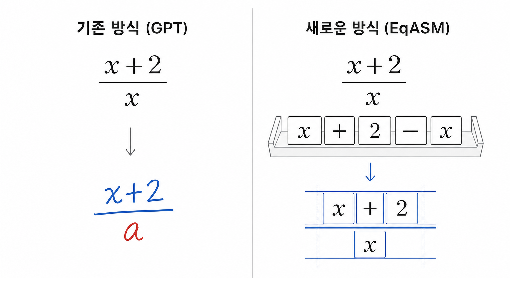
역할을 이렇게 나누면 1번에서 관찰한 오류들이 구조적으로 발생하지 않습니다. 모델의 출력에는 새 문자가 존재하지 않으므로 오독과 임의 추가가 일어나지 않고, 모든 조각을 사용해야 출력이 끝나므로 누락도 일어나지 않습니다. 남는 오류는 배치가 틀리는 경우 하나인데, 이때는 수식의 모양 자체가 달라지므로 렌더 비교로 검출할 수 있습니다. 이것이 EqASM(Equation Assembly Model)의 설계 원리입니다.
3. 모델 아키텍처 및 학습 설계
EqASM은 약 3억 파라미터의 encoder–decoder Transformer입니다. 입력은 수식 영역 안의 글자 조각 집합이고, 조각마다 문자 token과 bounding box 기하 정보를 embedding으로 변환해 더합니다. 조각들이 입력되는 순서에 따른 품질 차이를 해소하고자, 순서 정보는 의도적으로 임베딩에서 제외했습니다.
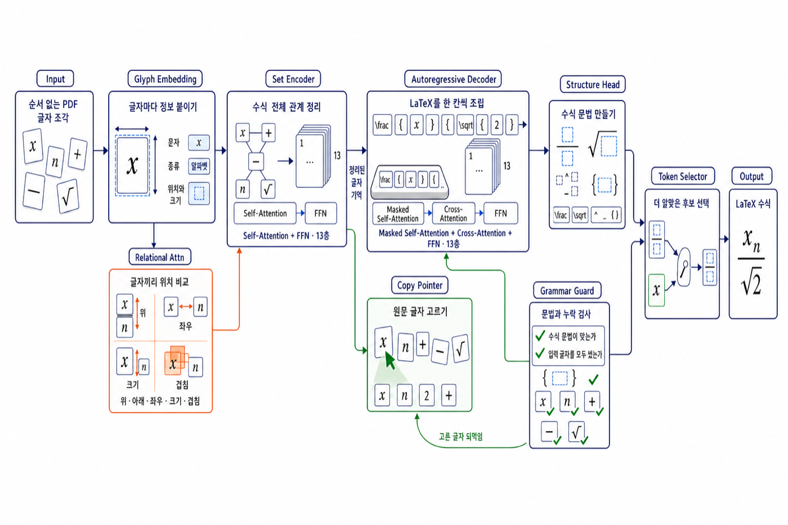
encoder는 pre-LayerNorm self-attention 블록입니다. 조각 쌍 사이의 12차원 상대 기하 feature — 중심 offset, 크기 비율, 가로·세로 겹침, 포함 관계 — 를 attention logit에 head별 bias로 더해서, 분수 막대 위에 있다거나 오른쪽 위에 작게 붙어 있다는 공간 관계를 attention이 직접 반영하도록 설계했습니다.
dx = cx[:, None, :] - cx[:, :, None]
wr = torch.log(w[:, None, :] / w[:, :, None])
contains = ((x0[:, :, None] <= cx[:, None, :]) & (cx[:, None, :] <= x1[:, :, None])
& (y0[:, :, None] <= cy[:, None, :]) & (cy[:, None, :] <= y1[:, :, None])).float()
relations = torch.stack([dx, dy, wr, hr, xov, yov, contains, inside,
hspan, hspan_rev, vspan, vspan_rev], -1)
scores = (q @ k.transpose(-2, -1)) * self.scale
scores = scores + self.rel(relations).permute(0, 3, 1, 2)decoder는 표준 autoregressive Transformer지만 생성하는 것은 \frac, ^, { } 같은 구조 token뿐입니다. 문자를 출력해야 하는 시점에는 pointer network가 encoder memory 위의 attention으로 입력 조각 하나를 가리켜 복사합니다. 이미 사용한 조각은 -inf로 masking해 재사용을 방지하고, 조각이 남아 있는 동안은 종료 token을 억제합니다. 1번에서 관찰한 누락 오류가 발생하지 않는 이유입니다.
copy_part = combined[:, self.n_struct:].masked_fill(consumed, float("-inf"))
rem = (~(uncopyable | consumed)).sum(-1)
combined[rem > 0, eos_si] = float("-inf")
consumed = consumed.scatter(1, pos.unsqueeze(1), (~is_struct).unsqueeze(1)) | consumed학습은 다음과 같이 진행했습니다.
- 데이터 — 수작업 라벨링 없음. 자체 조판 엔진이 수식 코드를 실제 PDF로 조판하고, 그 결과에서 (조각 집합 → 정답 LaTeX) 쌍을 자동 생성. 인쇄 공백, 가는 분수 막대, 복합 첨자 등 실제 시험지에서 나타나는 형태를 증강으로 추가.
- 인프라 — NVIDIA RTX 5090, PyTorch bfloat16 autocast, 배치 256.
- 최적화 — AdamW, cosine decay + warmup, gradient clipping 1.0, 30 epoch.
- 채점 — 출력 LaTeX를 같은 조판 엔진으로 다시 그려 원본 잉크와 픽셀 대조. 사람의 채점 없이 렌더 비교로 정답 여부를 판정.
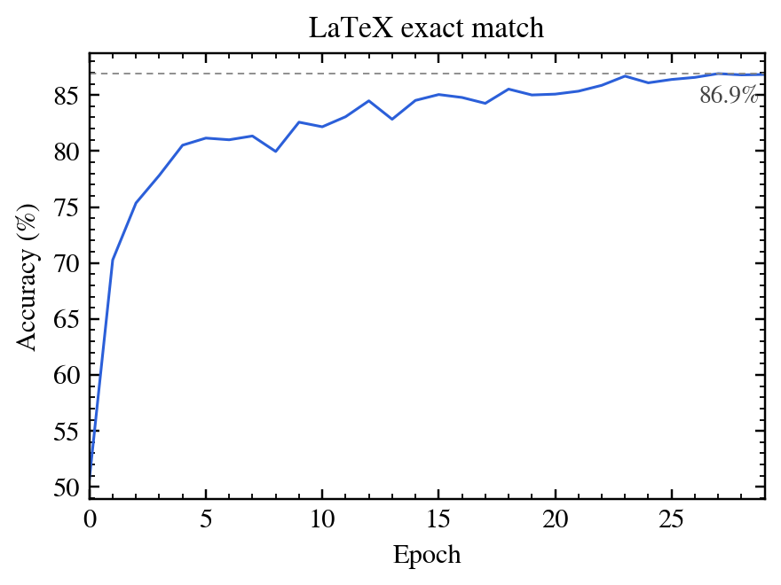
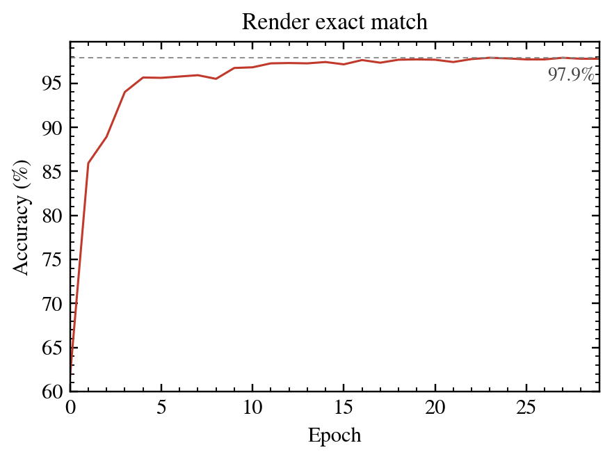
검증 최고치는 LaTeX 문자열 일치 86.9%, 렌더 일치 97.9%*입니다. 두 수치의 차이는 같은 모양을 만드는 LaTeX 표기가 여러 가지이기 때문에 생깁니다. 문자열이 달라도 조판 결과가 같으면 정답이므로, 서비스 기준 지표는 렌더 일치입니다.
* 97.9% 수치는 실제 문항에서의 인식 정확도가 아니라, 실제 시험지에는 등장하지 않는 초고난도 수식을 포함한 검증 데이터셋 내에서 측정한 인식 정확도입니다.
4. 결과
1번에서 벤치마크에 쓴 시험지들을 EqASM이 탑재된 문항 추출 파이프라인에 그대로 넣었습니다. 아래 왼쪽은 파이프라인이 검출한 수식 영역(초록 상자)이고, 오른쪽은 그 조각들로 EqASM이 조립한 LaTeX를 다시 렌더링한 것입니다. 파란색으로 표시한 부분이 1번에서 GPT가 오독했던 수식입니다.
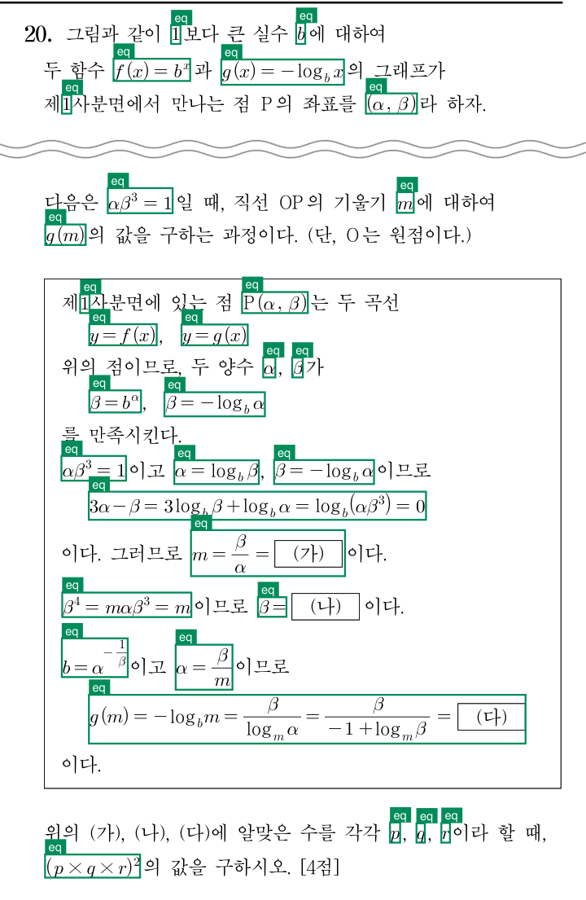
사례 1에서 GPT-5.6 Sol이 절반의 확률로 $+1$로 바꾸던 분모의 $-1$이 정확히 인식되었습니다.
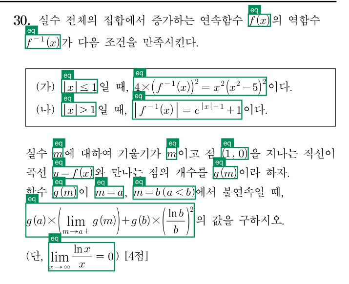
사례 2에서 사라지거나 뒤집히던 우극한의 방향 $a+$가 보존됩니다.
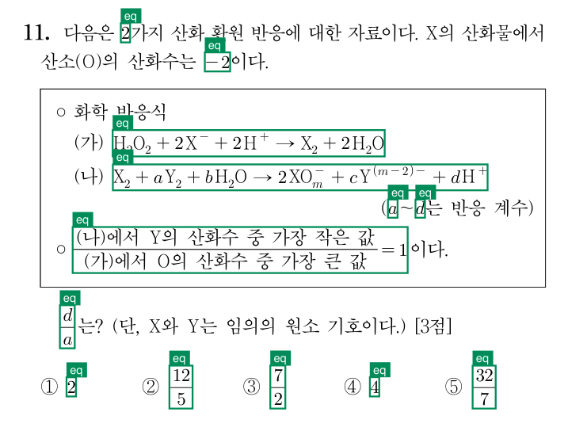
사례 3에서 이웃 항의 표기가 옮겨 붙던 $\mathrm{XO}_m^-$의 전하가 $-$ 하나로 정확하고, 분수 속 한글 조건도 누락 없이 담깁니다.
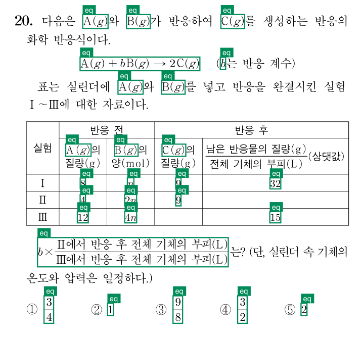
사례 4에서 뒤바뀌던 분자 Ⅱ와 분모 Ⅲ의 순서가 정확히 유지됩니다.
1번에서 GPT가 문항당 10회 중 최대 7회까지 틀리던 수식들이 같은 시험지에서 모두 원본 그대로 인식되었습니다. EqASM은 문자를 새로 생성하지 않기 때문에, 1번에서 관찰된 오독·임의 추가·누락이 발생하지 않습니다. 비용과 처리 시간은 다음과 같습니다.
| GPT-5.6 Sol | EqASM | |
|---|---|---|
| 모델 규모 | 비공개 (상용 최고 성능) | 약 3억 파라미터 |
| 서빙 | 외부 API | 자체 서버리스 GPU |
| 문항당 평균 처리 시간 | 14초 | 0.5초 |
| 문항당 비용 | 약 $0.02 | 약 $0.0002 |
이렇게 얻은 수식은 편집 가능한 LaTeX이므로 문항 검색, 유사 문항 추천, 난이도 예측의 입력이 되고, 출제 자동화와 교재 제작에도 그대로 쓰일 수 있습니다.
EqASM은 현재 Pipeline API에서 사용되고 있습니다. 전체 사용법은 Pipeline 문서에 있습니다.